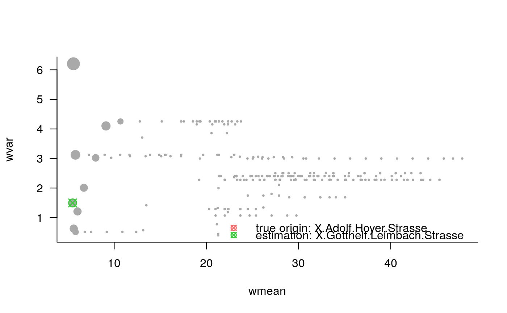

Origin Estimation for Propagation Processes on Complex Networks
origin.RdThis is the main function for origin estimation for propagation processes on complex networks. Different methods are available: effective distance median ('edm'), recursive backtracking ('backtracking'), and centrality-based source estimation ('centrality').
For details on the methodological background, we refer to the corresponding publications.
origin_edm for effective distance-median origin estimation (Manitz et al., 2016)
origin_backtracking for recursive backtracking origin estimation (Manitz et al., 2016)
origin_centrality for centrality-based origin estimation (Comin et al., 2011)
origin(events, type = c("edm", "backtracking", "centrality"), ...) origin_edm(events, distance, silent = TRUE) origin_backtracking(events, graph, start_with_event_node = TRUE, silent = TRUE) origin_centrality(events, graph, silent = TRUE)
Arguments
| events | numeric vector of event counts at a specific time point |
|---|---|
| type | character specifying the method, |
| ... | parameters to be passed to origin methods |
| distance | numeric matrix specifying the distance matrix (for |
| silent | locigal, should the messages be suppressed? |
| graph | igraph object specifying the underlying network graph (for |
| start_with_event_node | logical specifying whether backtracking only starts from nodes that experienced events (for |
Value
origin_edm returns an object of class origin, list with
estorigin estimateauxdata.framewith auxiliary variablesidas node identifier,eventsfor event magnitude,wmeanfor weighted mean,wvarfor weighted variance, andmdistmean distance from a node to all other nodes.
type = 'edm'effective distance median origin estimation
origin_backtracking returns an object of class origin, list with
estorigin estimateauxdata.framewith auxiliary variablesidas node identifier,eventsfor event magnitude, andbcountfor backtracking counts, how often backtracking identifies this source node.
type = 'backtracking'backtracking origin estimation
origin_centrality returns an object of class origin, list with
estorigin estimateauxdata.framewith auxiliary variablesidas node identifier,eventsfor event magnitude, andcentfor node centrality (betweenness divided degree).
type = 'centrality'centrality-based origin estimation
References
Comin, C. H. and da Fontoura Costa, L. (2011). Identifying the starting point of a spreading process in complex networks. Physical Review E, 84. <DOI: 10.1103/PhysRevE.84.056105>
Manitz, J., J. Harbering, M. Schmidt, T. Kneib, and A. Schoebel (2016). Source Estimation for Propagation Processes on Complex Networks with an Application to Delays in Public Transportation Systems. Accepted at JRSS-C.
Manitz, J. (2014). Statistical Inference for Propagation Processes on Complex Networks. Ph.D. thesis, Georg-August-University Goettingen. Verlag Dr.~Hut, ISBN 978-3-8439-1668-4. Available online: http://ediss.uni-goettingen.de/handle/11858/00-1735-0000-0022-5F38-B.
Manitz, J., Kneib, T., Schlather, M., Helbing, D. and Brockmann, D. (2014). Origin detection during food-borne disease outbreaks - a case study of the 2011 EHEC/HUS outbreak in Germany. PLoS Currents Outbreaks, 1. <DOI: 10.1371/currents.outbreaks.f3fdeb08c5b9de7c09ed9cbcef5f01f2>
See also
Other origin-est: origin_multiple
Examples
data(delayGoe) # compute effective distance data(ptnGoe) goenet <- igraph::as_adjacency_matrix(ptnGoe, sparse=FALSE) p <- goenet/rowSums(goenet) eff <- eff_dist(p)#> Computing the effective distance between 257 nodes: #> 1................................................................................................... #> 100................................................................................................... #> 200.........................................................done# apply effective distance median source estimation om <- origin(events=delayGoe[10,-c(1:2)], type='edm', distance=eff) summary(om)#> Effective distance median origin estimation: #> #> estimated node of origin 91: X.Gotthelf.Leimbach.Strasse #> #> auxiliary variables: #> id events wmean wvar #> Min. : 1 Min. : 0.0000 Min. : 5.482 Min. :0.3987 #> 1st Qu.: 65 1st Qu.: 0.0000 1st Qu.:21.572 1st Qu.:2.2761 #> Median :129 Median : 0.0000 Median :27.345 Median :2.4050 #> Mean :129 Mean : 0.6459 Mean :26.948 Mean :2.4989 #> 3rd Qu.:193 3rd Qu.: 0.0000 3rd Qu.:33.359 3rd Qu.:2.9986 #> Max. :257 Max. :46.0000 Max. :47.762 Max. :6.2052 #> mdist #> Min. :14.34 #> 1st Qu.:20.75 #> Median :24.23 #> Mean :24.92 #> 3rd Qu.:28.88 #> Max. :39.16#> start est hitt rank spj dist #> 1 X.Adolf.Hoyer.Strasse X.Gotthelf.Leimbach.Strasse FALSE 2 2 1332# backtracking origin estimation (Manitz et al., 2016) ob <- origin(events=delayGoe[10,-c(1:2)], type='backtracking', graph=ptnGoe) summary(ob)#> Backtracking origin estimation: #> #> estimated node of origin 87: X.Gesundbrunnen #> #> auxiliary variables: #> id events bcount #> Min. : 1 Min. : 0.0000 Min. :0.00000 #> 1st Qu.: 65 1st Qu.: 0.0000 1st Qu.:0.00000 #> Median :129 Median : 0.0000 Median :0.00000 #> Mean :129 Mean : 0.6459 Mean :0.03891 #> 3rd Qu.:193 3rd Qu.: 0.0000 3rd Qu.:0.00000 #> Max. :257 Max. :46.0000 Max. :3.00000#> start est hitt rank spj dist #> 1 X.Adolf.Hoyer.Strasse X.Gesundbrunnen FALSE 4 8 5328# centrality-based origin estimation (Comin et al., 2011) oc <- origin(events=delayGoe[10,-c(1:2)], type='centrality', graph=ptnGoe) summary(oc)#> Centrality-based origin estimation: #> #> estimated node of origin 119: X.Hermann.Kolbe.Strasse #> #> auxiliary variables: #> id events cent #> Min. : 1 Min. : 0.0000 Min. :0.000 #> 1st Qu.: 65 1st Qu.: 0.0000 1st Qu.:2.938 #> Median :129 Median : 0.0000 Median :5.875 #> Mean :129 Mean : 0.6459 Mean :5.167 #> 3rd Qu.:193 3rd Qu.: 0.0000 3rd Qu.:8.062 #> Max. :257 Max. :46.0000 Max. :9.000 #> NA's :247#> start est hitt rank spj dist #> 1 X.Adolf.Hoyer.Strasse X.Hermann.Kolbe.Strasse FALSE 9 5 3330